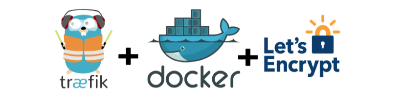

19 tháng 09, 2021 - 178 lượt xem
Traefik là một reverse proxy rất đa năng.
Nó có thể cài đặt trong môi trường Docker, Docker Swarm, Kubernetes để làm API Gateway.
Điểm mạnh là nó có khả năng liên tục cập nhật cấu hình danh mục các service chạy hoặc tắt trong Docker Swarm, Kubernetes để định tuyến lại, cung cấp giao diện quản lý (dashboard) rất đẹp.
Lập trình có thể viết bổ xung middleware, plugins bằng Golang.
Trong bài viết này tôi chia sẻ lại kinh nghiệm cấu hình LetsEncrypt TLS với Traefik. Các bước như sau:
Tạo một overlay network để traefik và các dịch vụ cùng tham gia vào
Định nghĩa 3 entry points: 80 (http), 443 (https), 8080 (dashboard, api)
```yaml
- "--entryPoints.web.address=:80"
- "--entryPoints.api.address=:8080"
- "--entrypoints.websecure.address=:443"
```
1. Cấu hình docker provider chế độ Swarm, cập nhật lại danh sách các service cứ 30 giây một lần, mặc định là không hiện service vào Traefik trừ khi có chủ ý
```yaml
- '--providers.docker.watch=true'
- '--providers.docker.swarmMode=true'
- '--providers.docker.swarmModeRefreshSeconds=30s'
- '--providers.docker.exposedbydefault=false'
```
Cấu hình LetsEncrypt. Thay email bằng email riêng của bạn. caserver phải trỏ đến caserver=https://acme-v02.api.letsencrypt.org/directory
```yaml
- "--certificatesresolvers.myresolver.acme.tlschallenge=true"
- "--certificatesresolvers.myresolver.acme.caserver=https://acme-v02.api.letsencrypt.org/directory"
- "--certificatesresolvers.myresolver.acme.email=you@yourcompany.com"
- "--certificatesresolvers.myresolver.acme.storage=/letsencrypt/acme.json"
```
1. Mở cổng từ máy ảo vào Docker container
```yaml
ports:
- "80:80"
- "443:443"
```
1. Đồng bộ thư mục từ máy ảo vào Docker container traefik. Đồng bộ </var/run/docker.sock thực chất để
traefik có
thể gọi trực tiếp Docker daemon lấy thông tin các service trong Docker Swarm
```yaml
volumes:
- "/home/dev/letsencrypt:/letsencrypt"
- "/var/run/docker.sock:/var/run/docker.sock:ro"
```
1. Nếu bạn triển khai Docker Swarm bạn cần sử dụng deploy.labels gán nhãn cho Docker service để Traefik có thể nhận ra và định tuyến request
```yaml
deploy:
labels:
- "traefik.enable=true" # Tham gia vào danh sách dịch vụ Traefik quản lý
- "traefik.docker.network=an_overlay_network" # Tham gia mạng overlay
- "traefik.http.routers.dashboard.rule=Host(`dashboard.yourcompany.com`)" # Biểu thức điều hướng request chứa dashboard.yourcompany.com vào dịch vụ này
- "traefik.http.routers.dashboard.entrypoints=websecure" # Ngõ vào phải là https
- "traefik.http.routers.dashboard.tls=true" # Bật TLS để mã hoá đường truyền
- "traefik.http.routers.dashboard.tls.certresolver=myresolver" # Dùng myresolver để chọn LetsEncrypt public/private key
- "traefik.http.routers.dashboard.service=api@internal" # Đây là dịch vụ dashboard của Traefik
- "traefik.http.routers.dashboard.middlewares=auth" # Sử dụng middleware Basic Auth để yêu cầu người dùng đăng nhập
- "traefik.http.middlewares.auth.basicauth.users=you@yourcompany.com:xxxxxx" # userid và pass để đăng nhập kiểu Basic Auth
- "traefik.http.services.gateway.loadbalancer.server.port=8080" # Dịch vụ phục vụ ở cổng 8080
```
Chú ý cấu hình traefik.http.middlewares.auth.basicauth.users bạn có thể vào
https://hostingcanada.org/htpasswd-generator/
để sinh chuỗi user/pass dùng thuật toán Bcrypt. Cần phải nhân đôi ký tự $
trong chuỗi password
băm để escape character. Nếu quên là bạn không thể đăng nhập được.
Triển khai stack bằng lệnh docker stack deploy -c docker_compose.traefik.yml traefik
Thử truy cập vào https://dashboard.yourcompany.com. Chú ý rằng yourcompany.com phải là
tên miền bạn sở hữu và đang trỏ tới máy ảo triển khai Traefik.
Đây là file docker-compose cuối cùng
version: '3.8'
networks:
an_overlay_network:
external: true
services:
gateway:
image: traefik:v2.5
networks:
- an_overlay_network
command:
- '--api.dashboard=true'
- '--api.insecure=false'
- '--providers.docker=true'
- '--entryPoints.web.address=:80'
- '--entryPoints.api.address=:8080'
- "--entrypoints.websecure.address=:443"
- '--providers.docker.watch=true'
- '--providers.docker.swarmMode=true'
- '--providers.docker.swarmModeRefreshSeconds=30s'
- '--providers.docker.exposedbydefault=false'
- "--entrypoints.web.http.redirections.entryPoint.to=websecure"
- "--entrypoints.api.http.redirections.entryPoint.to=websecure"
- "--certificatesresolvers.myresolver.acme.tlschallenge=true"
- "--certificatesresolvers.myresolver.acme.caserver=https://acme-v02.api.letsencrypt.org/directory"
- "--certificatesresolvers.myresolver.acme.email=you@yourcompany.com"
- "--certificatesresolvers.myresolver.acme.storage=/letsencrypt/acme.json"
ports:
- "80:80"
- "443:443"
volumes:
- "/home/dev/letsencrypt:/letsencrypt"
- "/var/run/docker.sock:/var/run/docker.sock:ro"
deploy:
labels:
- "traefik.enable=true"
- "traefik.docker.network=an_overlay_network"
- "traefik.http.routers.dashboard.rule=Host(`dashboard.yourcompany.com`)"
- "traefik.http.routers.dashboard.entrypoints=websecure"
- "traefik.http.routers.dashboard.tls=true"
- "traefik.http.routers.dashboard.tls.certresolver=myresolver"
- "traefik.http.routers.dashboard.service=api@internal"
- "traefik.http.routers.dashboard.middlewares=auth"
- "traefik.http.middlewares.auth.basicauth.users=you@yourcompany.com:xxxxxx"
- "traefik.http.services.gateway.loadbalancer.server.port=8080"
Tham khảo Lộ trình DevOps - đào tạo trực tuyến có tương tác, học viên ở mọi nơi đều có thể học.